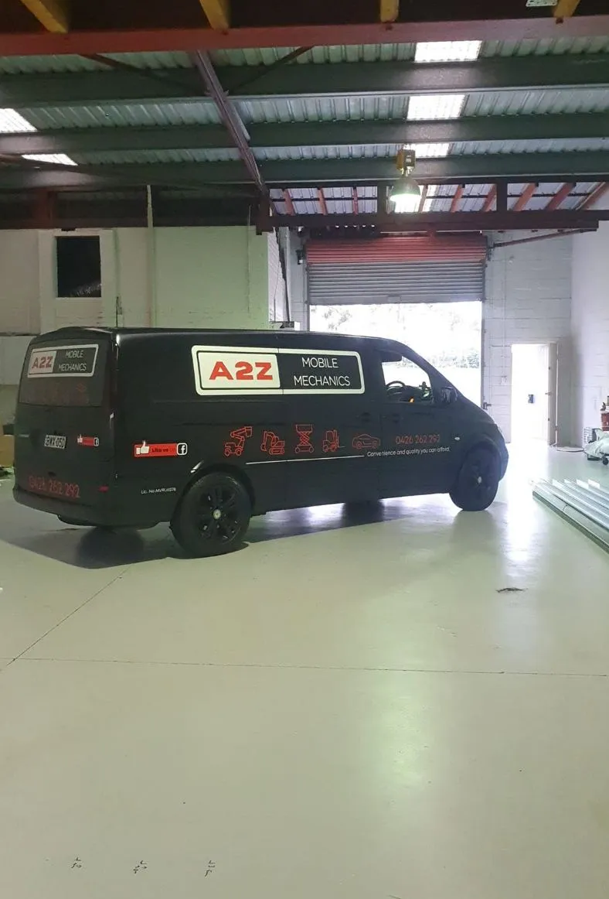
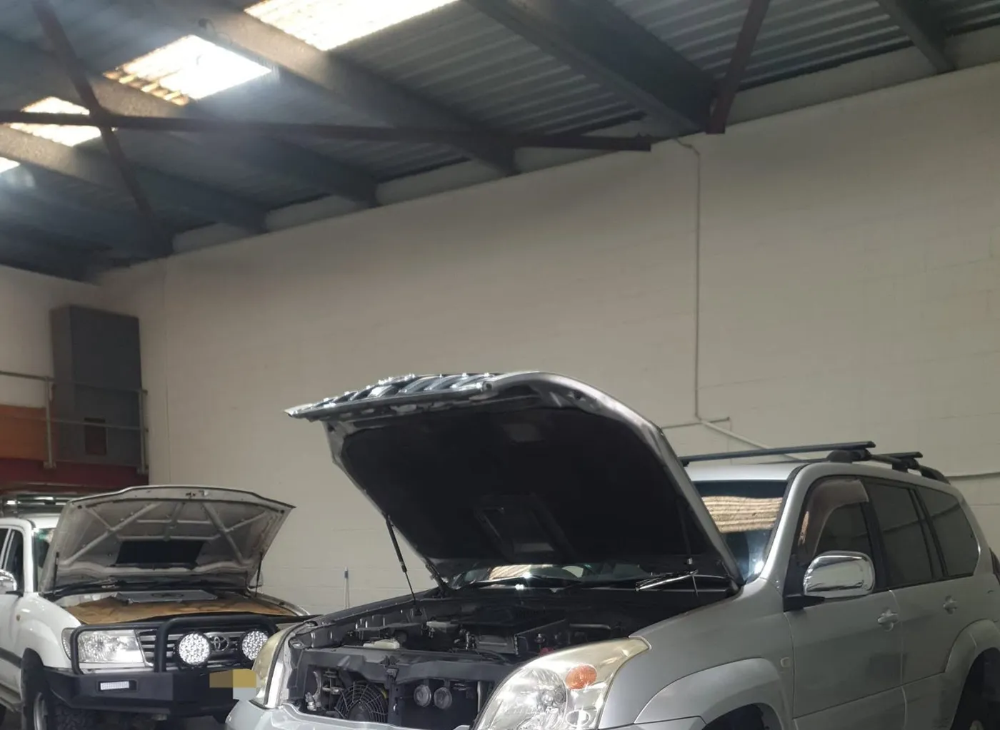
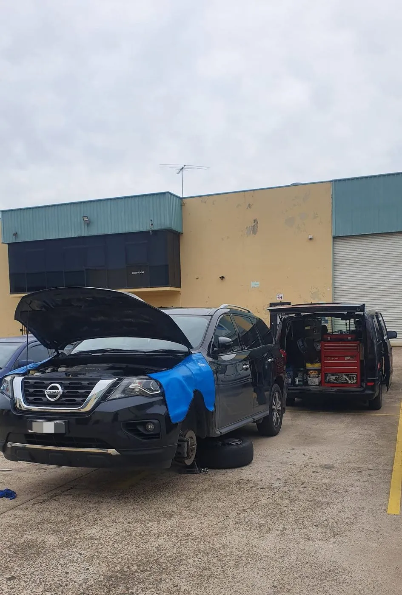
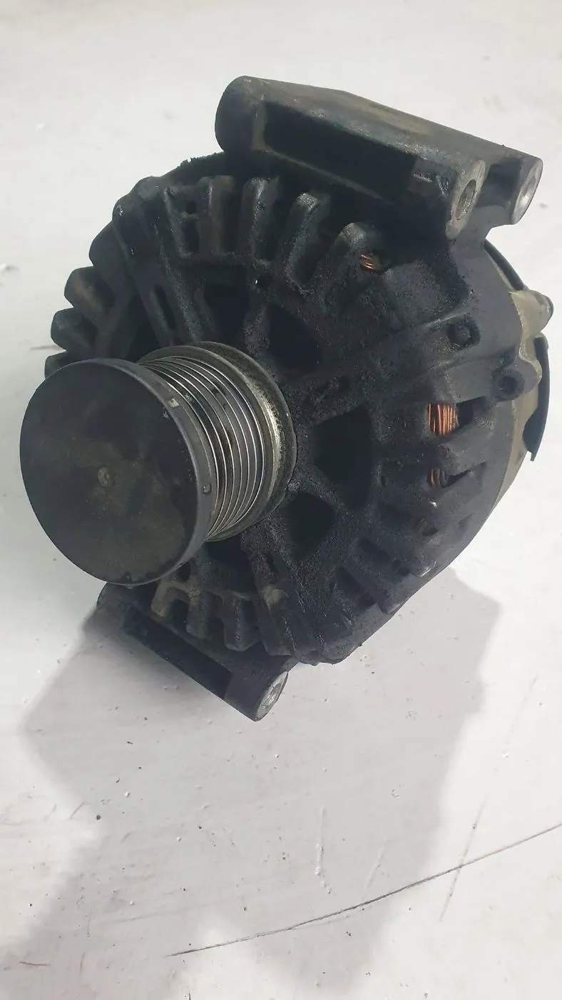
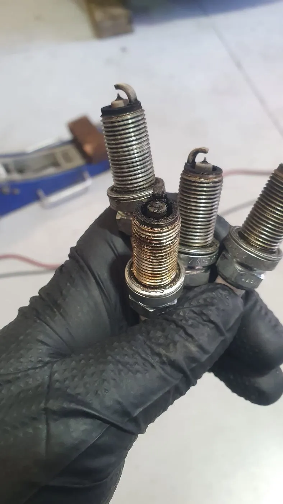
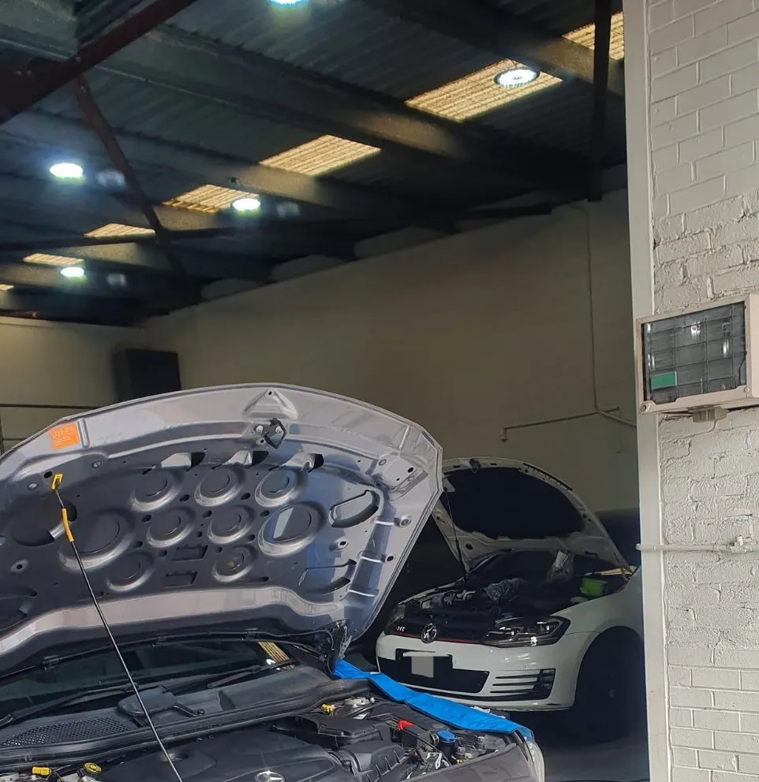

Convenience and quality you can afford
That's the line painted on our van, and it's how we run A2Z every day.

A local mechanic who comes to you
A2Z Mobile Mechanics is a Narellan business led by Mina, a mechanic our customers describe as honest, patient and properly knowledgeable. The idea is simple: a fully equipped van that brings the workshop to wherever your car is.
When a job needs more room, it goes to our base at 4/30 Campbell St, Narellan. Either way, you deal with the same person from first call to final handover.
Talk to MinaWhat our customers notice
Taken from the things people say most often in our Google reviews.
Everything explained
“Explains things clearly without jargon or pressure.” You'll see the worn part or the fault code before any work starts.
No upselling
“Honest advice instead of trying to sell unnecessary repairs.” If something can wait until next service, we'll tell you.
Fast when it matters
“Came out within 2 hours.” Breakdowns and urgent pink slips are often sorted the same day.
The van and the workshop
Professional scan tools, testing gear and parts sourcing, wherever the job is.





Car playing up? Give Mina a call.
Tell us what's going on and we'll organise a time that suits you — at your place, at work or at our Narellan base.